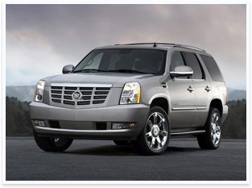

Сегодня очень актуален вопрос увеличения срока работы масла. Самыми неподходящими для этого условиями являются условия дорожного цикла. В то время, когда автомобиль регулярно останавливается и начинает движения опять на всю систему приходиться
В то время, когда автомобиль регулярно останавливается и начинает движения опять на всю систему приходиться максимальная нагрузка, масло, в том числе, портится значительно быстрее. Негативно влияет на срок работы масла и редкая эксплуатация авто с его долгими простоями в гараже. Если запустить ситуации с маслом, то в случае проблем может потребоваться восстановление автомобиля после ДТП.
Вы можете значительно дольше ездить на одном и том же масле, если не будете давать авто сильные нагрузки, будете использовать качественные масла. Но и тут необходимо быть крайне осторожным и всегда чувствовать меру. Ведь езда на некачественном масле может вылиться в серьезные поломки и тогда вы не только не сэкономите, но и переплатите вдвойне, как в случае со скупым из известной поговорки.
В то время, когда автомобиль регулярно останавливается и начинает движения опять на всю систему приходиться максимальная нагрузка, масло, в том числе, портится значительно быстрее. Негативно влияет на срок работы масла и редкая эксплуатация авто с его долгими простоями в гараже. Если запустить ситуации с маслом, то в случае проблем может потребоваться восстановление автомобиля после ДТП.
Техцентр «Автопрофи» с 2004 года производит ремонт Merсedes Benz любых моделей. Ремонт Мерседес предоставляемый нашим техническим центром соответствует всем требованиям компании производителя. Семилетний опыт работы на московском рынке, позволяет нам производить ремонт Merсedes Benz любой сложности.
Основные виды работ, которые выполняет наш технический центр и которые наиболее востребованы при ремонте Мерседес следующие: